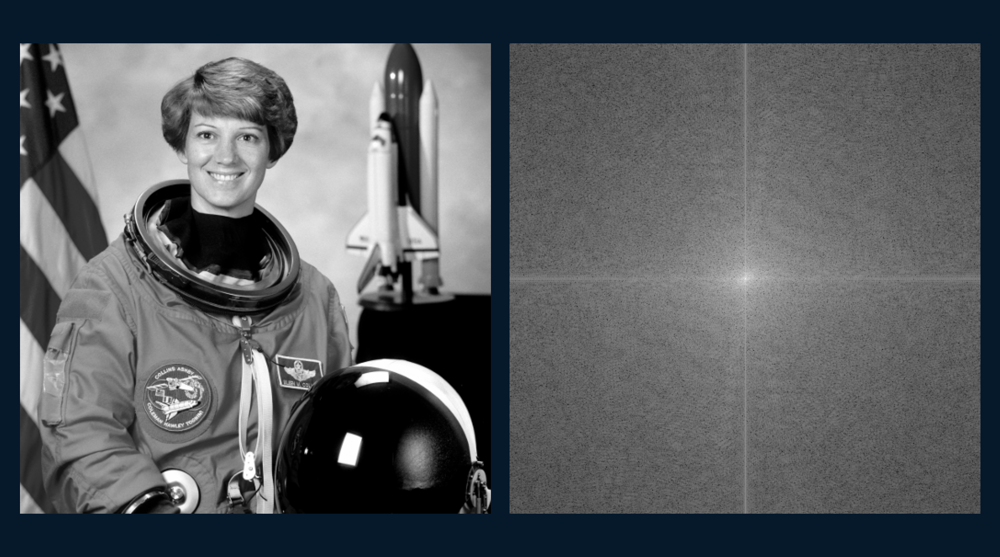

Overview
DSCI-D 321 covered how different types of data - numbers, signals, images, audio, text, graphs - get represented and transformed so they can actually be analyzed. Rather than one single project, the course built up a toolkit across several assignments, each focused on a different representation problem. This page pulls together the topics and skills that ended up being the most useful, with a few code snippets from the techniques I use most.
Signal & image representation
Worked with complex numbers and Fourier transforms to understand how signals get decomposed into frequency components, then applied that to real image and audio data - extracting spectrograms from audio files and exploring aliasing effects in image sampling.
# applying a 2D Fourier transform to an image to view its frequency spectrum
imgX = scipy.fftpack.fftshift(scipy.fftpack.fft2(img_gray))
plt.figure(figsize=(6, 6))
plt.imshow(np.log(np.abs(imgX) + 1), cmap='gray')
plt.title('2D Fourier Transform (log magnitude)')
plt.colorbar()
plt.show()Time series & graph representations
Loaded and visualized real time-series pricing data, working with datetime indexing and trend visualization, alongside representing relational data as graphs.
# comparing a simple moving average against an exponential moving average
df['SMA_20'] = df['price'].rolling(window=20).mean()
df['EMA_20'] = df['price'].ewm(span=20, adjust=False).mean()
fig, ax = plt.subplots(figsize=(12, 5))
ax.plot(df.index, df['price'], label='Price', alpha=0.5)
ax.plot(df.index, df['SMA_20'], label='SMA (20)')
ax.plot(df.index, df['EMA_20'], label='EMA (20)')
ax.legend()
ax.set_title('Price with Moving Averages')
plt.show()Machine learning fundamentals
Built and compared several core ML models - KNN, logistic regression, SVM, an artificial neural network, and a convolutional neural network - including feature scaling experiments on multi-scale datasets like the Wine dataset and a customer churn dataset.
# KNN accuracy before and after feature scaling
knn_raw = KNeighborsClassifier(n_neighbors=5)
knn_raw.fit(X_train, y_train)
acc_raw = accuracy_score(y_test, knn_raw.predict(X_test))
ss = StandardScaler()
X_train_ss = ss.fit_transform(X_train)
X_test_ss = ss.transform(X_test)
knn_ss = KNeighborsClassifier(n_neighbors=5)
knn_ss.fit(X_train_ss, y_train)
acc_ss = accuracy_score(y_test, knn_ss.predict(X_test_ss))Text & data structures
Worked with text classification and corpus processing, plus foundational data structures and algorithms - trees, heaps, hashing - that underpin how larger datasets get organized and searched efficiently.
Skills demonstrated
Python Signal Processing Machine Learning Neural Networks Data Structures Time Series Analysis